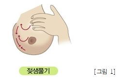
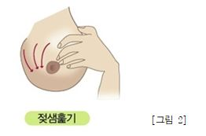
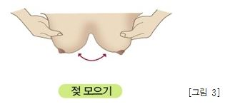
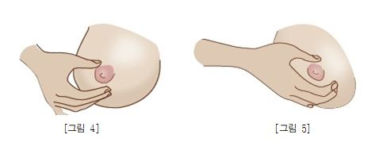
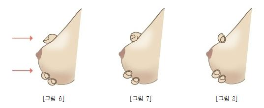

class="txt">아이의 미래 "아이사랑"이 함께 키워갑니다.
출산 후 되도록 빨리(30분~1시간 이내) 모유 수유를 시작하고, 생후 6개월간은 아기에게 모유만을 먹이고 6개월 이후부터는 이유식을 첨가하는 게 바람직하다고 권하고 있습니다. 모유수유 중인 아기는 1~6개월까지 하루 평균 750cc-800cc의 모유를 섭취합니다. 그러나 이것은 아기마다 다를 수 있습니다.
추가정보
유방울혈의 예방을 위해서나 모유 저장을 위하여 젖을 짤 때가 많습니다. 모유는 유축기 등의 기계가 필요하기도 하지만 ‘손으로 모유 짜는 법’을 잘 익히면 오히려 유축기보다 젖이 잘 나옵니다. 모유를 짜기 전에 더운물로 샤워를 하거나 따뜻한 물수건으로 찜질을 해 주면 도움이 됩니다. 처음에는 유방마사지를 하여 모유를 유륜 쪽으로 모으고, 그 다음 ‘마맷 테크닉’으로 유즙을 짜내주면 됩니다.





잠깐
| 실 온(25℃) | 냉 장 실(0~4℃) | 냉장고내 분리냉동실 | |
|---|---|---|---|
| 금방 짜낸 모유 | 4~6시간 | 2~3일 | 3~4개월 |
| 냉동 상태에서 녹인 모유 | 보관 안됨 | 해동 후 24시간 이내 (냉장보관 시) |
재냉동은 안 됨 |
다음 웹사이트나 자료에서 자세한 내용을 확인하세요.
| 구분 | 수유횟수 | 시간간격 | 수유량 | 비고 |
|---|---|---|---|---|
| 신생아 | 8-12회 | 2-3시간 | 1회 50~100cc |
|
| 1~4개월 | 4-10회 | 2-4시간 | 1회 100~200cc |
|
| 5~6개월 (이유식 초기) |
4-6회 | 4-6회 낮시간 |
1회 160~200cc (하루 800~1,000cc) |
|
| 7~8개월 (이유식 중기) |
3-5회 | 5-6시간 낮시간 |
1회 160~240cc (하루 700~800cc) |
|
| 9-11개월 (이유식 후기) |
2-3회 | 아침 점심 저녁 |
하루 600~800cc |
|
| 12-24개월 (이유식 완료기와 일반식) |
2회 | 오전 오후 |
하루 400~600cc |
|
(출처: 한국건강증진개발원, 모유수유성공비결)
이유식을 먹이기 전에 준비과정으로 미리 즙을 조금 맛보게 하여 젖 이외에 다른 음식이 있다는 것을 알려주면, 이유식을 시작하기가 훨씬 수월합니다. 5∼6개월 정도가 되었다고 무작정 이유식을 만들어 먹이면 아기가 거부하는 경우도 있으므로 준비기를 가지는 것이 좋습니다. 이유를 준비하는 아기에게는 액체로 되어 무리 없이 삼킬 수 있는 미음이나 수프가 적당합니다.
수프의 농도는 걸쭉하기보다는 물처럼 맑은 것이 아기에게 부담이 가지 않습니다. 미음을 먹기 시작하면 무, 당근, 호박, 감자 등의 야채를 한 가지씩 이용해 엷은 수프를 끓여 먹여 봅니다. 소금이나 설탕 등의 간을 하지 말고, 그 채소 자체의 맛을 느낄 수 있도록 하는 것이 좋습니다.
| 가능한 음식 | 농도 | |
|---|---|---|
| 곡류 | 쌀, 찹쌀, 감자, 고구마 | 10배 미음 / 스프정도의 묽기 |
| 고기, 생선, 달걀, 콩류 | 쇠고기, 달걀 노른자, 완두콩, 강낭콩 | 육수 또는 곱게 갈아서 제공 |
| 채소류 | 애호박, 양배추, 브로콜리, 당근, 시금치(6개월부터) | 즙 또는 곱게 갈아서 제공 |
| 과일류 | 바나나, 사과, 배 | 즙 또는 곱게 갈아서 제공 |
※ 우유 및 유제품류, 유지 및 당류, 양념 등은 아직 이릅니다.
참조자료